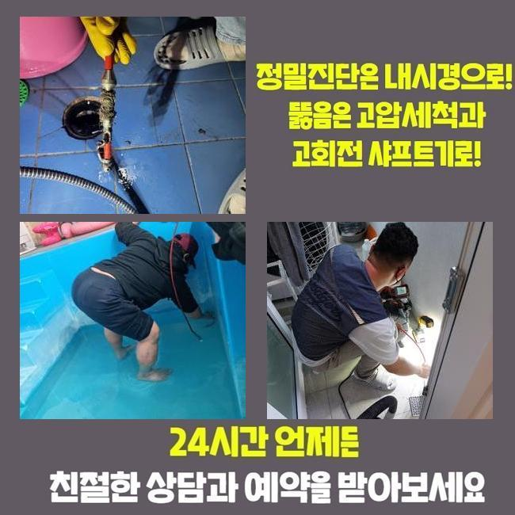
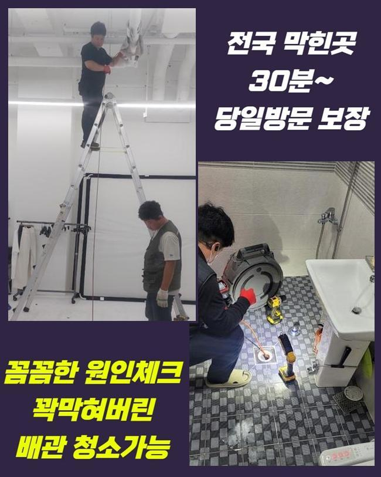
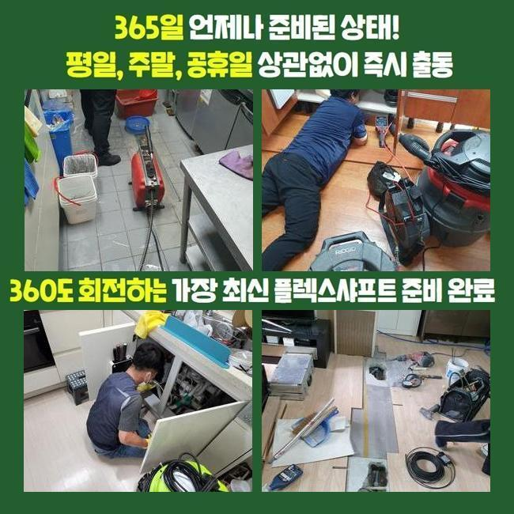
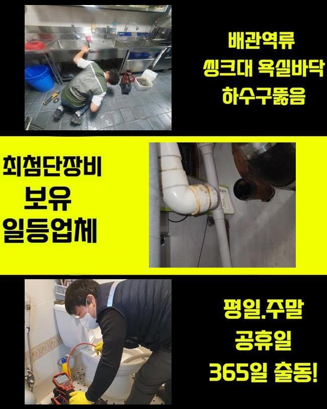
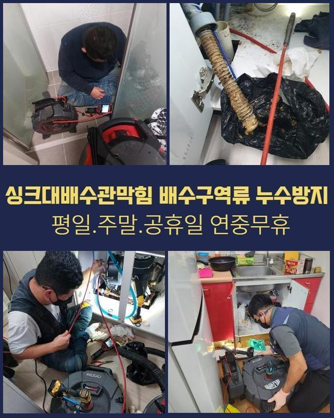
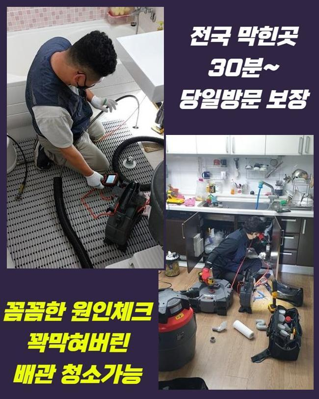
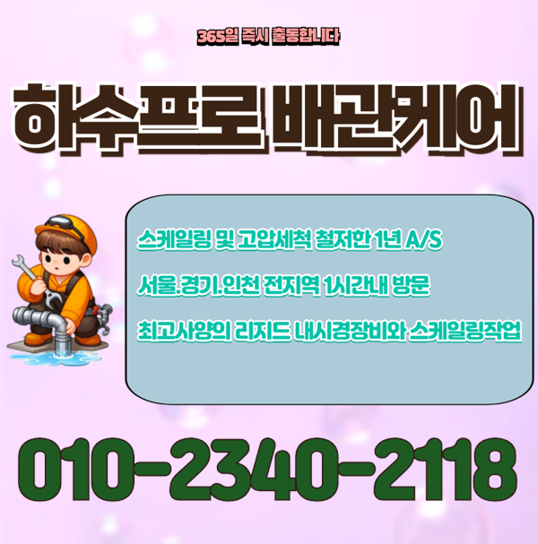

🏠 안양 안양동화장실막힘 악취차단 누수공사
안양 하수구막힘 전문 시공 후기

📋 작업 개요
- 위치: 안양
- 서비스 유형: 하수구막힘, 배관막힘, 누수수리, 역류해결, 배관청소, 설비공사, 악취차단
- 작업 일시: 2025. 1. 26. 9:36
- 업체명: 하수구수사대 (010-5615-2118)
🔍 문제 상황
안양 안양동화장실막힘 악취차단 누수공사
얼마전 막히는 문제때문에 여러 피해를 받으셨던 고객께 연락이 왔었죠
의뢰자께서는 관로와 관련한 전문인은 아니셨지만 나름의 대처법을 알고 계셨었죠
고객분은 입구쪽을 청소시키고 막힌 스팟을 찾아보고자 관찰했지만 어디부분이 시발점인것인지 아는 것이 불가해 저희들에게 해결을 바라셨던 것이였죠
해당 장소에 찾아뵈었더니 지속적인 셀프대처로 고생하신것이 느껴졌습니다
고객들의 경우 확실한 근원들을 알아내기힘든 사례가 많아요
도착하여 이곳저곳을 살피니 괄목할만한 문제들은 없었습니다
의뢰자분은 바깥에 위치한 관로에서 원인이 존재할 확률들이 높을거라 생각하게 되었어요
더불어 식물들이 많다면 뿌리등이 배수관으로 침투된다거나 잔해물이 빠지게될 여지가있습니다
많은 이유로 바깥쪽의 관로들이 막히는상황에 노출됩니다

🔎 원인 분석
💡 전문가 진단: 정밀 진단 장비를 사용하여 슬러지의 고착 여부를 판명하고 타격/세척 작업을 실시했습니다.
고객에게 지금 의심하는 원인들에 설명하고 외부라인을 점검해야한다고 안내했어요
고객분도 안내드린 내용들을 들어보시고 외측하수구의 점검과정에 수락을 하셨어요
시정을 착수해주기위하여 기기의 점검도 빠트리지 않았어요
하수시스템 정체의 이유들은 특정이 안돼요
배수설비가 드러나있으면 흙이라던가 주위에서 유입된 잔해물이 배수관으로 누적되기 시작해요
더군다나 강수상황에 처했을때 외측의 관로등의 실태를 확인하지않을 시 문제들은 갑자기 생길거에요
또한, 나무의 뿌리등이 배수관으로 들어가는 경우들도 왕왕 있습니다
배관위에 자리하거나 더불어 파손을 유발하는 트러블까지 발생케하죠
이러한 결함 발생 시 유수가 멈춰버려 부차적 문제까지 생기게 될 수 있어요
이말고도 내구성이 떨어져있다거나 파손에도 통수가 막혀버려 막힐 수 있어요

🔧 작업 과정
시간들이 흐르며 배수관이 부식되면 이물이 켜켜히 쌓이는 기반이 만들어집니다
끝으로 일반적인 하수시스템 정체의 주 원인들은 적재적소의 관리책 실시를 안하기 때문이에요
그때그때 체크해주지않으면, 작은 잔해물이 자리를 잡으면서 정체가 심해질거에요
결과적으로는 바깥쪽을 시기적절하게 검수하고 관리하는게 앞서서 조치하는 실질적인 방식으로 작용합니다
작용할만한 기조를 인지하시고 선제적으로 막는것이 우선입니다
내시경으로 바깥쪽 하수시스템들의 실태를 체크해보았어요
내시경으로 체크해보았더니 하수구의 지점마다 잔재와 기름성분들로 막혀버린것이 목격되었어요
이렇게 하수도가 막히면 물의 유수가 불가하여 역류까지 나타나므로 올바른 조치들을 취하시는게 중요합니다
진단을 거쳐 잔재들이 퇴적된 위치를 타겟하여 청소해보기로 했답니다
고수압의 방법을 준비해 오염된 배수관을 군데군데 청소해주었어요
고착된 이물들을 깊은곳에서부터 청소하니 막힌상태의 하수가 흘렀는데요
초반엔 잔해들이 나오기 시작했고 잔해물이 청소되며 집수시설로 조속히 복구됐어요
물이 수월하게 빠지는 형상을 체크해보며 의뢰자께서도 모두 관찰하셨어요
이물제거가 진행되고있는 중에 의뢰자와 얘기하면서 잔해물이 쌓이는 까닭들을 말했더니 고객분도 평소 궁금해했던 사안을 물어보셨어요
이로인해 의뢰자께서는 관리측면의 비중을 이해하셨고 지속적으로 주기적인 청소들의 당위성에 대해 공감했죠
끝내 작업들이 종료된 후 하수관로가 완전히 되돌아오고 의뢰인분은 흘러가는 과정까지 체크했죠


✅ 작업 완료
고객께도 결과까지 이해시켜드리고 지속적으로의 관리방법들까지 안내했답니다
정기성을 갖추고 바깥쪽을 살펴보고 상황에 따라서는 전문성을 갖춘 해결책을 받아보는게 좋은 방법이라고 설명드렸죠
최종적으로 고객님에게서 고민을 해결해드려서 안심할 수 있었죠
여러분의 안심할 수 있는 물빠짐에 적신호가 켜지지않도록 시간에 상관없이 저희의 전문가들에게 연락주세요




⚠️ 베란다 누수 및 방수 관리 방법
- ✅ 비가 많이 올 때 창틀 주변이나 아래층 천장에 얼룩이 생기는지 정기적으로 확인해 보세요.
- ✅ 우수관 주변 실리콘 마감이 들뜨거나 깨진 틈새가 있는지 손상 여부를 수시로 체크하세요.
- ✅ 베란다 바닥 타일의 줄눈(메지)이 소실되면 그 틈으로 물이 침투하여 누수가 유발됩니다.
- ✅ 누수 의심 증상 발견 시 방치하면 아래층 손실이 커지므로 즉시 전문가의 진단을 받으십시오.
💡 핵심 정리
- 확실한 장비 작업(내시경 점검 및 샤프트 스케일링)으로 원인을 뿌리 뽑습니다.
- 작업 후 1년 이내에 동일한 부위 재발 시 100% 무상 A/S 서비스를 보장합니다.
- 서울 · 경기 · 인천 전 지역에 24시간 언제든 긴급 출동할 수 있도록 항시 대기 중입니다.
❓ 자주 묻는 질문 (FAQ)
🚨 안양 하수구막힘 문제로 고민이신가요?
정확한 원인 진단과 확실한 시공으로 재발 없는 해결을 약속드립니다.
24시간 긴급 출동 | 서울 · 경기 · 인천 전지역 | 1년 내 재발 시 무상 A/S